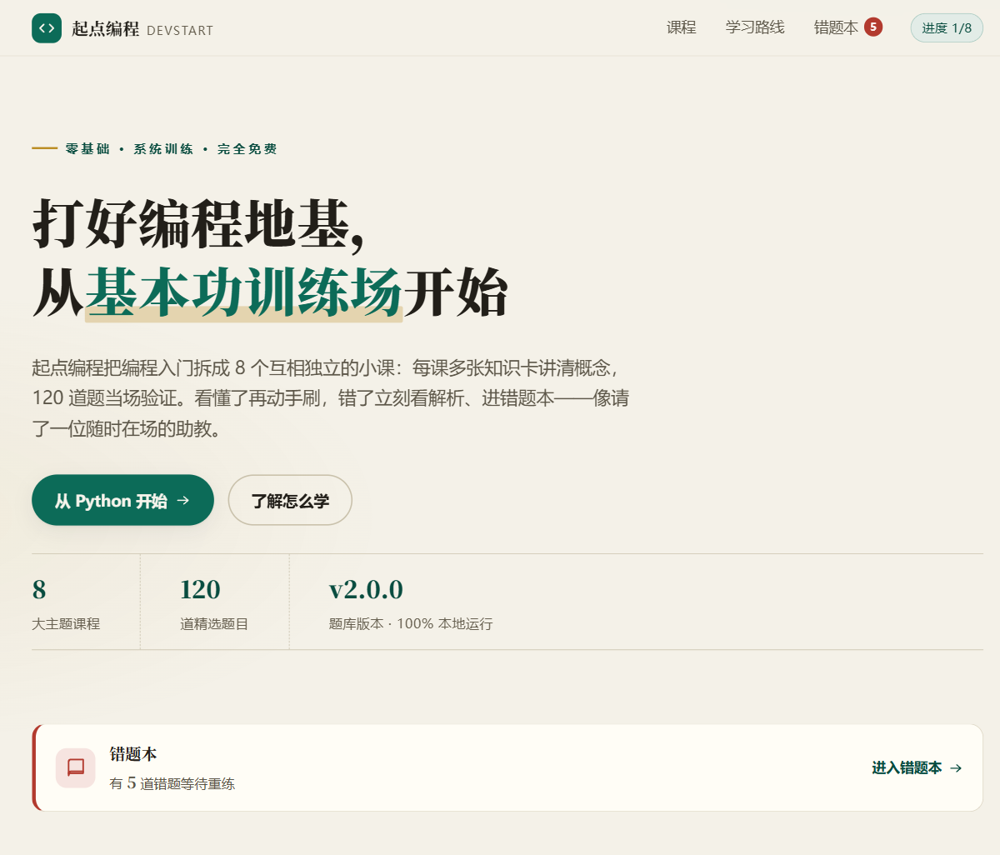
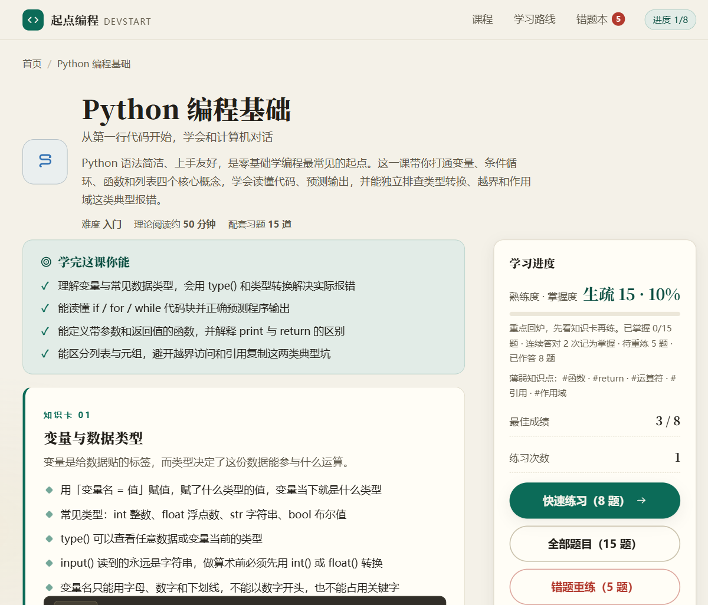
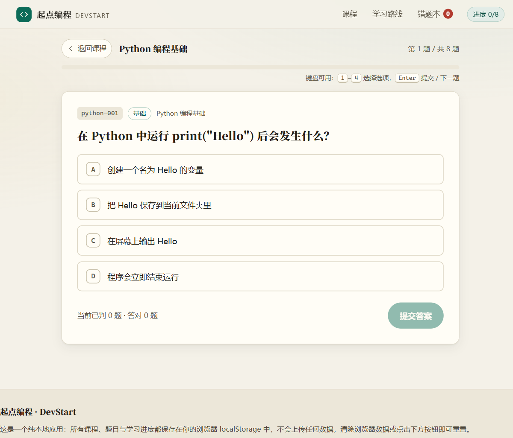
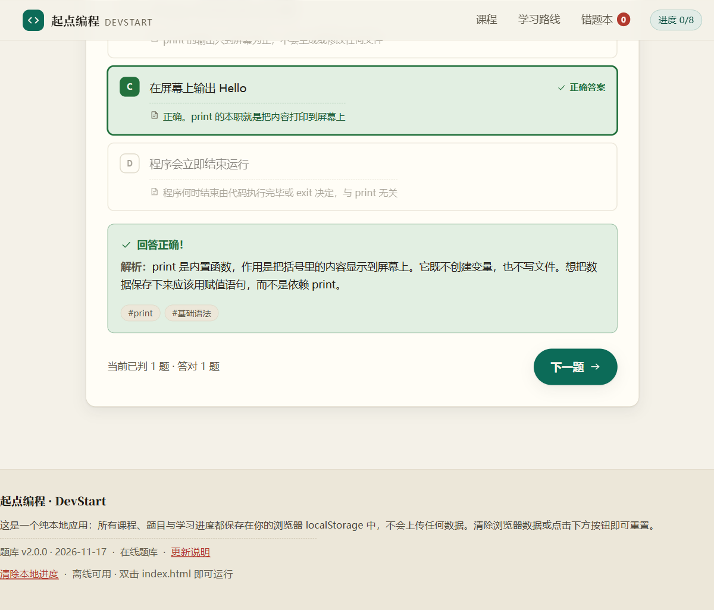
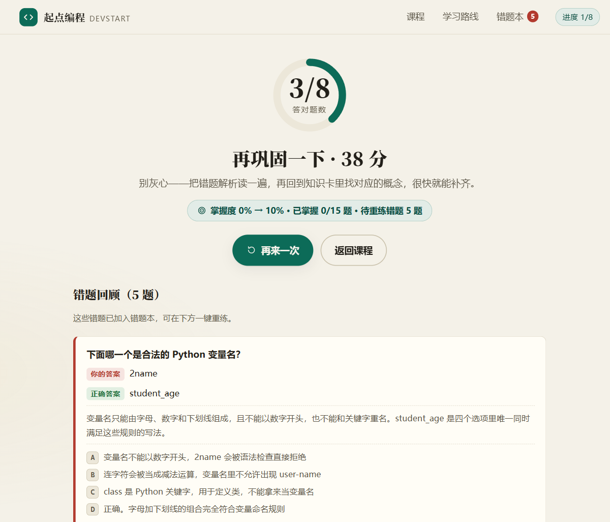

「起点编程 DevStart」面向零基础学习者，把计算机基础拆成互相独立的小课：先用一张知识卡讲清概念，再用一组题验证是否真的会，错题自动沉淀、反复回炉，形成「学一点 → 练一题 → 错题回炉」的完整闭环。产品为纯本地静态站点，双击即可运行，不上传数据、不注册账号。
首批覆盖 Python 编程基础、Docker 容器入门、Kubernetes 入门、Linux 命令行基础、Git 版本控制、计算机网络基础、SQL 与数据库入门、数据结构入门。主题从「基础」起步，延伸到进阶与挑战，题目类型含代码阅读、命令输出、场景排错与方案权衡。





本项目全流程由 AI 辅助完成：AI 负责快速产出初稿与可运行代码，人负责定义目标、审校技术准确性与做取舍。AI 不是「一次性生成器」，而是贯穿规划、内容、开发、测试、文档的工作伙伴。
| 阶段 | AI 的具体工作 | 人工把关 |
|---|---|---|
| 产品规划 | 撰写产品计划书：用户画像、痛点、差异化、指标体系、MVP 边界、里程碑与风险对策 | 确认范围，砍掉视频/账号/沙箱等非 MVP 项 |
| 内容生产 | 生成 8 主题大纲、32 张知识卡、120 道题初稿、逐选项解析、难度标签与知识点标签 | 技术事实核对、题目去重、难度校准、表述润色 |
| 代码实现 | 编写原生 JS 路由、判分核心、进度核心、内容加载器、响应式 CSS 与页面视图 | 架构取舍（静态/零构建/本地优先）、交互走查 |
| 质量保障 | 编写 65 项自动化测试、内容校验脚本与构建脚本，覆盖题库/构建/加载/判分/进度/冒烟 | 补充真实浏览器走查、键盘与无障碍检查 |
| 文档与规范 | 编写内容更新指南、题库 Schema、README 与使用说明 | 与实际流程逐条对照修订 |
Demo v0（5 主题 / 40 题）验证了学习闭环；收到「前端体验没问题，但题目深度和熟练度不够」的反馈后，正式版 v1.0 升级为 8 主题 / 120 题，新增进阶与挑战题、逐选项解析、四级熟练度、薄弱知识点与题库独立更新机制，并补齐 65 项自动化测试。
题目与代码解耦：日常加题、改解析只需编辑内容包、提升 manifest.json 版本号并重新构建，无需改动应用代码。版本规则为「改题 minor+1、改错别字 patch+1、增删主题 major+1」，页脚展示当前版本、发布日期与更新说明。建议节奏：每 2 周修正与补题、每月扩容、每季度新增主题。
65 项测试全通过content:check 通过全部 JS 语法检查通过浏览器实测无报错375px 移动端适配
题库校验覆盖：数量 / ID 唯一 / 每题 4 选项与 4 条逐选项解析 / 答案分布 / 难度分布 / 代码题数量 / 生成物一致性。逻辑测试覆盖：判分、进度迁移、掌握度、熟练度、薄弱知识点、组卷优先级、内容加载回退与路由冒烟。
作品链接（在线 Demo，永久）：
https://ldq-cmd.github.io/devstart-quiz/
GitHub / 主页链接：
https://github.com/LDQ-CMD/devstart-quiz
本地运行：
双击仓库中 demo/index.html 即可离线使用；或在仓库根目录执行 npm run serve 后访问 http://localhost:8000/。
| 类别 | 内容 |
|---|---|
| 应用 | demo/index.html、css/、js/（可直接部署为静态站点） |
| 题库 | content/packs/*.json（源文件）、bundle.json（产物）、SCHEMA.md |
| 脚本 | validate-content.js、build-content.js、content-lib.js |
| 测试 | tests/ 下 6 组、65 项自动化测试 |
| 文档 | 产品计划书、内容更新指南、README、本作品集 |